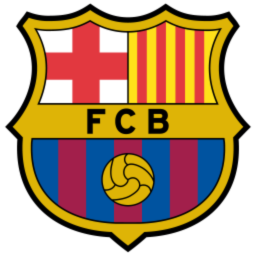
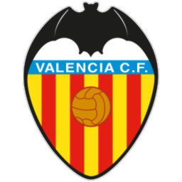

Champions League (1-4)
Europa League (5)
Conference League (6)
Descenso (18-20)
| # | Equipo | PJ | V | E | D | GF | GC | DG | Pts |
|---|---|---|---|---|---|---|---|---|---|
| 1 | Sevilla FC | 2 | 2 | 0 | 0 | 5 | 2 | +3 | 6 |
| 2 | Deportivo Alavés | 2 | 1 | 1 | 0 | 4 | 1 | +3 | 4 |
| 3 | Atlético de Madrid | 2 | 1 | 1 | 0 | 4 | 2 | +2 | 4 |
| 4 |  FC Barcelona | 1 | 1 | 0 | 0 | 5 | 0 | +5 | 3 |
| 5 | RCD Espanyol | 2 | 1 | 0 | 1 | 4 | 2 | +2 | 3 |
| 6 | Real Madrid | 1 | 1 | 0 | 0 | 2 | 1 | +1 | 3 |
| 7 | Real Betis | 1 | 1 | 0 | 0 | 1 | 0 | +1 | 3 |
| 8 | Getafe CF | 2 | 1 | 0 | 1 | 1 | 3 | -2 | 3 |
| 9 | Villarreal CF | 2 | 0 | 2 | 0 | 4 | 4 | 0 | 2 |
| 10 | RC Deportivo | 1 | 0 | 1 | 0 | 1 | 1 | 0 | 1 |
| 11 | RC Celta de Vigo | 1 | 0 | 1 | 0 | 0 | 0 | 0 | 1 |
| 11 |  Valencia CF | 1 | 0 | 1 | 0 | 0 | 0 | 0 | 1 |
| 11 |  CA Osasuna CA Osasuna | 1 | 0 | 1 | 0 | 0 | 0 | 0 | 1 |
| 14 | Real Racing Club | 2 | 0 | 1 | 1 | 2 | 3 | -1 | 1 |
| 14 | Rayo Vallecano | 2 | 0 | 1 | 1 | 2 | 3 | -1 | 1 |
| 16 | Levante UD | 2 | 0 | 1 | 1 | 0 | 3 | -3 | 1 |
| 17 | Elche CF | 2 | 0 | 1 | 1 | 1 | 6 | -5 | 1 |
| 18 | Real Sociedad | 1 | 0 | 0 | 1 | 0 | 1 | -1 | 0 |
| 19 | Athletic Club | 1 | 0 | 0 | 1 | 1 | 3 | -2 | 0 |
| 20 | Málaga CF | 1 | 0 | 0 | 1 | 0 | 2 | -2 | 0 |
Clasificación oficial de LaLiga tras la Jornada 2 (24 de agosto de 2026). Fuente: LaLiga.com.